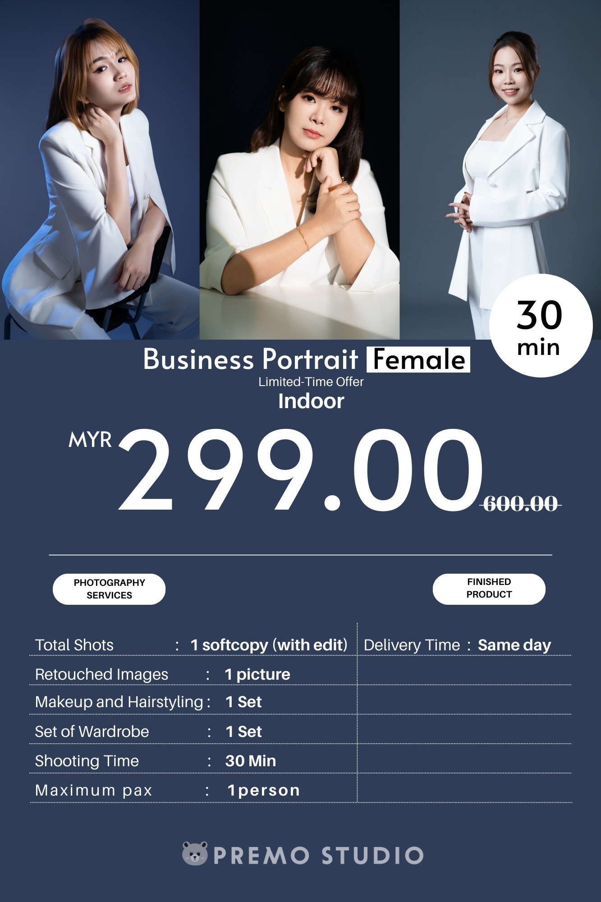
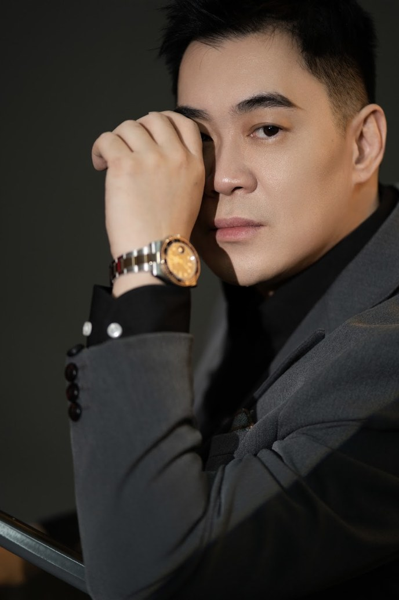
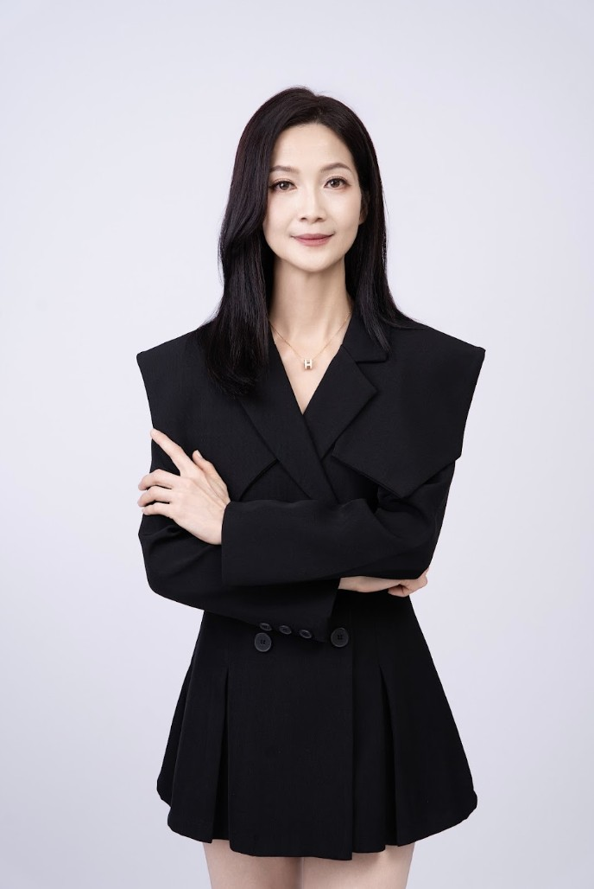

真实价格 · REAL PRICING
形象照套餐价格Headshot Packages & Pricing
以下为限时优惠价格，实际价格请以预约时门店最新公告为准。Limited-time offer pricing shown below — please confirm current pricing when booking.



Premo Studio 新山 Mount Austin 分店，提供专业形象照拍摄服务，适合 LinkedIn 头像、求职履历、公司团队页面使用。专业打光与姿势指导，呈现自然、有自信、不做作的你。Our Johor Bahru (Mount Austin) branch offers professional headshots for LinkedIn, resumes, and company profiles — natural, confident, never stiff.


形象照要在几秒内传递专业与信任感，手机随手拍或办公室快照，通常在这几个地方出问题。A headshot has seconds to convey professionalism and trust — a phone selfie or office snapshot usually falls short in the same few ways.
以下为限时优惠价格，实际价格请以预约时门店最新公告为准。Limited-time offer pricing shown below — please confirm current pricing when booking.
